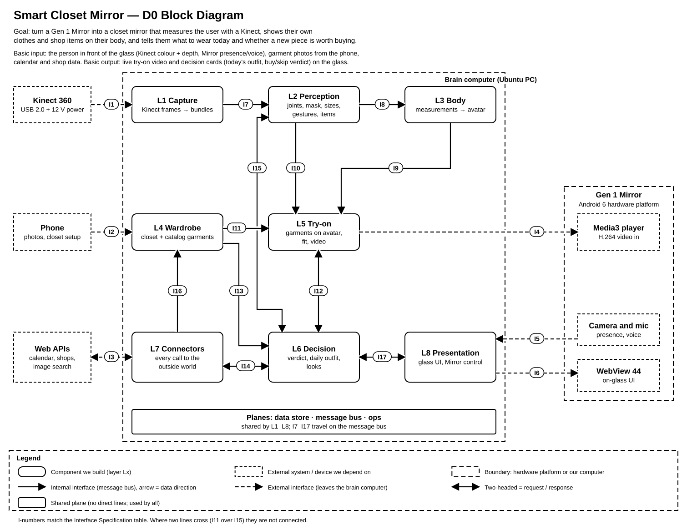
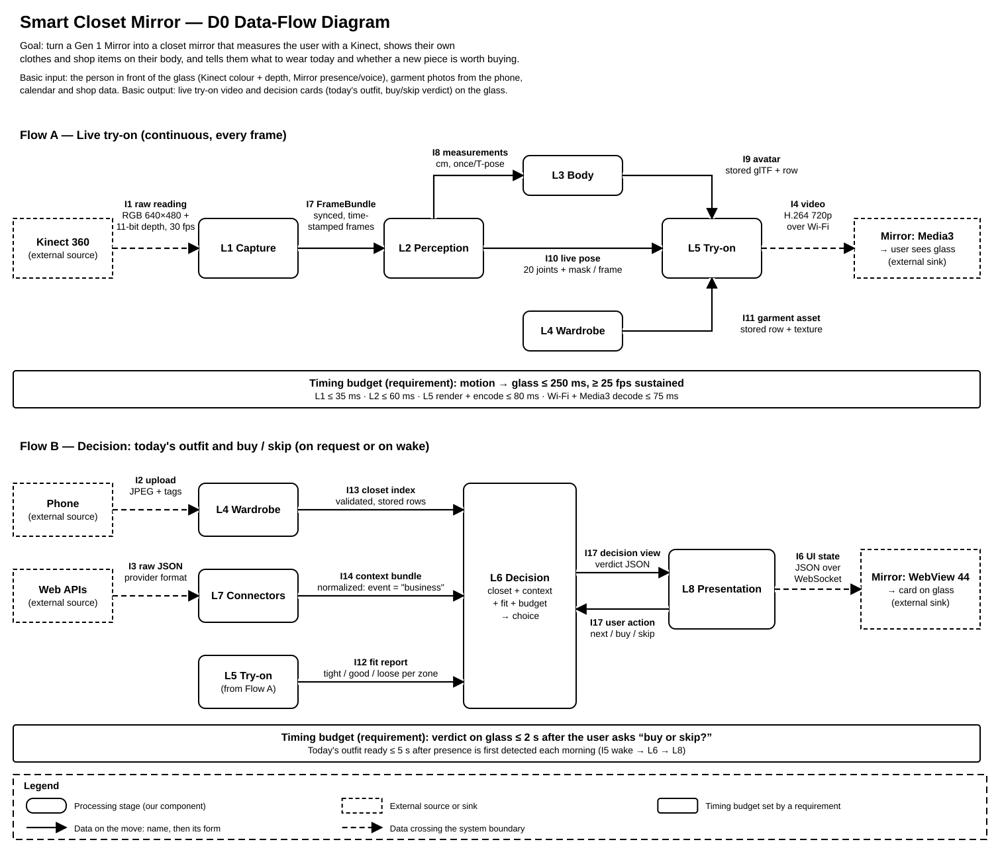

Project title: Smart Closet Mirror
Basic input: the person standing in front of the glass (Kinect 360 colour and depth frames, plus presence and voice from the Mirror's camera and mic), garment photos sent from the user's phone, and calendar and shop data pulled from web APIs.
Basic output: on the glass, a live try-on video of garments on the user's body and decision cards: today's outfit, a buy-or-skip verdict, and looks built from inspiration photos.
Each diagram carries its own title, goal statement, and legend. The legend on the diagram is the authority; this table repeats it.
| Symbol | Meaning |
|---|---|
| Rounded box, solid border | A component the team builds. Components are the eight layers L1–L8 that run on the brain computer. |
| Square box, dashed border | An external system, device, or service we depend on but do not build (Kinect 360, phone, web APIs, the Mirror's player, camera, and WebView). |
| Large dashed outline | A physical boundary: the brain computer (Ubuntu PC) or the Gen 1 Mirror hardware platform. |
| Solid dark arrow | An internal interface carried on the message bus. The arrow points the way data moves. |
| Dashed arrow | An external interface that leaves the brain computer (USB, Wi-Fi, or internet). |
| Two-headed arrow | A request/response interface: the caller sends a request and gets a reply on the same interface. |
| Pill label I1…I17 | Interface ID. Each matches one row of the Interface Specification table (part 4). |
| Wide band labelled "Planes" | Shared planes (data store, message bus, ops). All components use them, so they have no lines of their own. |
| Box labelled "Timing budget" (data-flow diagram) | A timing budget set by a requirement. |

Source: Design_Diagrams/D0_block_diagram.drawio (open in draw.io / diagrams.net). Eight components, 17 labelled interfaces; external systems use the dashed square style.
| Component | Responsibility (one sentence) | Interfaces in | Interfaces out | Primary owner | Example jobs it owns |
|---|---|---|---|---|---|
| L1 Capture | Turns the Kinect's raw streams into synchronized, time-stamped frame bundles. | I1 | I7 | Rehman Khalid | Read Kinect pixels |
| L2 Perception | Extracts facts about bodies and garments from images (joints, mask, measurements, gesture intents, garment detections). | I7, I15 (request) | I8, I10, I15 (reply, gestures) | Arya Garg | Turn a T-pose into chest size; find the pieces in a celebrity photo |
| L3 Body | Converts body measurements into a sized, rigged avatar of the user. | I8 | I9 | Arya Garg | Measurements → avatar |
| L4 Wardrobe | Keeps the record of every garment the user owns or is considering. | I2, I16 | I11, I13 | Jace Schubert | Store a phone photo as a garment; hold shop catalog items |
| L5 Try-on | Places chosen garments on the user's avatar to report fit and render try-on video. | I9, I10, I11, I12 (request) | I4, I12 (reply) | Arya Garg | Calculate if a shirt is tight |
| L6 Decision | Chooses what the user should wear, buy, or skip. | I12, I13, I14, I15, I17 (action) | I12, I14, I15 (requests), I17 (view) | Clare Hooper | Pick today's outfit; say "buy" or "skip"; build a look from detected pieces |
| L7 Connectors | Normalizes all outside-world data into the system's own models. | I3 (reply), I14 (query) | I3 (request), I14 (bundle), I16 | Jace Schubert | Turn a calendar title into "business"; find a celebrity's photos |
| L8 Presentation | Owns everything the user sees on the glass, including Mirror control. | I5, I17 (view) | I6, I17 (action) | All | Wake the glass; draw decision cards |
| Planes (shared) | Provide storage, messaging, and health monitoring to every layer (infrastructure, not a feature component). | Used by all; carries I7–I17 | Rehman Khalid | Data store, message bus, logs and health | |
| Job | Owner | Why not the next closest layer |
|---|---|---|
| Read Kinect pixels | L1 | L2 only reads FrameBundles, never the device. |
| Turn a T-pose into chest size | L2 | L3 only consumes numbers; it does not measure. |
| Turn a calendar title into "business" | L7 | L7 normalizes all outside data into our models. |
| Pick today's outfit | L6 | L7 only fetches; L8 only shows. |
| Calculate if a shirt is tight | L5 | Fit needs the avatar and the garment together. |
| Say "buy" or "skip" | L6 | L5 gives fit facts; L6 adds style, gaps, and budget. |
| Wake the glass | L8 | All Mirror control calls come from one place. |
| Find a celebrity's photos | L7 | It is an outside call. |
| Find the pieces in those photos | L2 | Image understanding is perception, the same as a live frame. |
| Build the look from those pieces | L6 | Choosing is a decision. |
Internal interfaces (I7–I17) travel on the message bus as named topics. Large binary data (frames, images, meshes) stays in the data plane; messages carry a reference (*_ref) to it. All timestamps are nanoseconds since Unix epoch; all lengths are centimetres unless stated.
| ID | From → To | Inputs / outputs (name: type) | Data format | Protocol | On error | Handled by |
|---|---|---|---|---|---|---|
| I1 | Kinect 360 → L1 | out: rgb_frame: uint8[480][640][3], depth_frame: uint16[480][640] (11-bit raw), device_ts: uint32 | Raw RGB + packed 11-bit depth, 30 fps each | USB 2.0 isochronous (Kinect camera protocol); 12 V adapter | No frame for 2 s or USB unplugged: L1 reopens the device every 5 s and publishes capture.health = DOWN; L8 shows "Camera offline". | L1 |
| I2 | Phone → L4 | in: photo: JPEG ≤ 8 MB, category: enum{top, bottom, dress, outer, shoes}, size_label: string, brand: string?, price: decimal?; out: garment_id: UUID | multipart/form-data (JPEG + JSON part); JSON reply | HTTPS POST /api/v1/garments on home LAN | Bad image or missing field: 400 with field errors, phone keeps the draft. Same photo hash already stored: 409 returning existing garment_id. | L4 |
| I3 | L7 ↔ Web APIs | out: provider, endpoint, query params, OAuth token; in: provider JSON (calendar events, product listings, image-search results) | JSON | HTTPS REST, OAuth 2.0 bearer tokens | 401: refresh token once, then mark provider "needs re-link". 429/5xx: back off 1, 2, 4 s (max 3 tries), then answer from cache with stale = true. | L7 |
| I4 | L5 → Mirror Media3 player | out: video: H.264 Main, 1280×720, 30 fps, ≤ 4 Mbit/s, stream_id: string | H.264 in MPEG-TS | HTTP progressive stream over home Wi-Fi | Player disconnects: L5 keeps a 2 s buffer, player reconnects with backoff. Send buffer > 500 ms: L5 drops to 2 Mbit/s. | L5 |
| I5 | Mirror camera + mic → L8 | out: presence{present: bool, ts} at 2 Hz; voice_command{text: string, confidence: float 0–1} | JSON messages | WebSocket from the Mirror shell app | Socket drop: Mirror app reconnects every 2 s; L8 treats user as absent after 30 s with no presence. confidence < 0.6: L8 ignores the command. | L8 |
| I6 | L8 → Mirror WebView 44 | out: ui_state{screen: enum, cards: Card[], seq: int}, control{cmd: enum{wake, sleep, brightness}, value: int?} | HTML/CSS/ES5 bundle + JSON | HTTP GET for the bundle, WebSocket for state; JS bridge for control | Socket drop: WebView keeps last screen with a "reconnecting" badge; on reconnect L8 resends the full state (idempotent by seq). | L8 |
| I7 | L1 → L2 | FrameBundle{seq: uint64, ts: int64, rgb_ref: shm 640×480×3 uint8, depth_mm_ref: shm 640×480 uint16 (registered to RGB)} | Binary header + shared-memory buffers | Bus pub/sub frames.raw, keep newest 2 | L2 falls behind: it drops all but the newest bundle and counts drops on the ops plane; bundles older than 100 ms are skipped. | L2 |
| I8 | L2 → L3 | BodyMeasurements{user_id: UUID, height, chest, waist, hips, inseam, shoulder: float cm, confidence: float 0–1, captured_at: ts} | JSON (also stored as a row) | Bus pub/sub body.measured | Confidence < 0.7 or a value outside human range: L3 rejects with a reason; L6/L8 ask the user to repeat the T-pose. | L3 |
| I9 | L3 → L5 | Avatar{user_id, avatar_id: UUID, version: int, mesh_ref: URI (glTF binary), rig: map<joint, bone>} | JSON + glTF blob in data plane | Bus pub/sub body.avatar | Mesh missing or corrupt: L5 keeps the previous avatar version; if none exists it switches to a 2-D overlay mode. | L5 |
| I10 | L2 → L5 | LivePose{seq, ts, joints: [{name: enum(20), x, y, z: float m, conf: float}], mask_ref: 640×480 bitmask} | MessagePack (binary) | Bus pub/sub body.pose, 30 Hz, newest only | No person for > 0.5 s: L5 hides garments. A joint with conf < 0.5: L5 holds its last good position. | L5 |
| I11 | L4 → L5 | req: garment_id: UUID; reply: GarmentAsset{garment_id, category, size_label, size_chart{chest, waist, length: float cm}, texture_ref: URI, template_mesh_ref: URI} | JSON + images in data plane | Bus request/reply wardrobe.get, timeout 500 ms | Not found: error reply, L5 marks the garment "unavailable" in its fit report. No size chart: L5 renders it but reports fit "unknown". | L5 |
| I12 | L6 ↔ L5 | req: TryOnRequest{request_id, user_id, garment_ids: UUID[], stream: bool}; reply: FitReport (see example below) | JSON | Bus request/reply tryon.request → tryon.fit, timeout 1.5 s | Timeout: L6 shows its decision without fit and labels it "fit pending"; the late report updates the card. | L6 |
| I13 | L4 → L6 | ClosetIndex{items: [{garment_id, category, colors: string[], formality: int 1–5, season: enum, last_worn: date?}]} | JSON | Bus query wardrobe.list + change events wardrobe.changed | L4 not answering: L6 uses its cached index (if ≤ 24 h old) and flags results as possibly out of date. | L6 |
| I14 | L6 ↔ L7 | req: ContextQuery{kind: enum{calendar_day, product_search, celebrity_images}, params: map}; reply: ContextBundle{events: [{start, title, category: enum{business, casual, formal, sport}}], products: [{sku, shop, price: decimal, currency, url, sizes}], image_refs: URI[], stale: bool, fetched_at: ts} | JSON | Bus request/reply ctx.query, timeout 3 s | Provider down: L7 returns a partial bundle from cache with stale = true. Nothing usable: L6 falls back to defaults (event category "casual", no shop items). | L7, then L6 |
| I15 | L6 ↔ L2 | req: AnalyzeImages{request_id, image_refs: URI[]}; reply: DetectedItems{request_id, items: [{image_ref, category, color, bbox: int[4], conf: float}]}; event: GestureIntent{user_id, intent: enum{next, back, select, buy, skip}, conf, ts} | JSON | Bus request/reply vision.analyze (timeout 5 s) + pub/sub intent.gesture | Unreadable image: empty item list with a per-image error. Gesture with conf < 0.8: L2 drops it, so nothing reaches L6. | L2 |
| I16 | L7 → L4 | CatalogItem{sku, shop, title, category, price: decimal, currency, size_chart, image_ref: URI} | JSON | Bus pub/sub catalog.items | Missing size chart or image: L4 stores it as "incomplete", hidden from try-on. Repeated sku: update in place. | L4 |
| I17 | L6 ↔ L8 | L6→L8: DecisionView{view_id, view: enum{outfit_of_day, verdict, look}, verdict: enum{buy, skip}?, reasons: string[] (≤ 80 chars each), garment_ids: UUID[], budget_left: decimal?}; L8→L6: UserAction{view_id, action: enum{next, select, buy, skip, try, wake}, target_id: UUID?, source: enum{touch, voice, gesture}} | JSON | Bus pub/sub decision.view / ui.action | Unknown view type: L8 shows a generic card and logs it. Action for an old view_id: L6 ignores it and resends the current view. | L8, L6 |
{ "request_id": "b0c2f6e1-7a1d-4f52-9d0e-3c6a2f8e1b77",
"user_id": "5f0a3e2c-91b4-4d8e-a1c3-7e2b9d4f6a10",
"results": [ { "garment_id": "2c9e7d41-0b6a-4f3e-8e55-a1d2c3b4e5f6",
"size_label": "M",
"zones": { "chest": "tight", "waist": "good", "hips": "good", "length": "good" },
"ease_cm": { "chest": -1.5, "waist": 4.0, "hips": 5.5 },
"overall": "tight", "confidence": 0.86 } ],
"avatar_version": 3, "generated_at": 1794182400000000000 }

Source: Design_Diagrams/D0_data_flow.drawio. Flow A runs every frame while someone stands at the glass; Flow B runs when a decision is asked for or the Mirror wakes. Inspiration looks follow Flow B with one extra loop: L7 fetches photos (I14), L6 sends them to L2 (I15), and L2 returns detected pieces for L6 to match against the closet.
Chosen combination: a layered architecture governs the brain computer, a pipeline governs the live try-on path inside it, and client-server governs everything that crosses the brain's boundary.
| Pattern | Where it applies | What it means for us |
|---|---|---|
| Layered | L1–L8 on the brain computer | Each layer has one job and talks only through its numbered interfaces. Only L1 touches the Kinect, only L7 calls the internet, only L8 controls the Mirror. |
| Pipeline | Flow A: L1 → L2 → (L3) → L5 → I4 | Frames move one way through fixed stages, each with its own time budget. Stages drop stale frames rather than queueing them, so delay never builds up. |
| Client-server | Brain ↔ Mirror (I4–I6), Phone → L4 (I2), L7 → Web APIs (I3) | The brain is the server for the Mirror and the phone, which are thin clients. L7 is the client of outside web APIs. |
| Criterion | How the combination meets it |
|---|---|
| Fit to the problem | The problem is a sensor-to-screen chain (Kinect → body → garments → glass) plus slower decision work. A pipeline fits the chain, layers keep decision logic away from device code, and client-server matches the real hardware split between a capable PC and a weak Mirror. |
| Team skills | One layer per owner, each with a written interface, so members can build and test in parallel. Everyone already knows HTTP/JSON client-server work; no one needs container orchestration. |
| Performance and timing | The 250 ms motion-to-glass budget needs the heavy work (depth, pose, rendering, H.264 encoding) on one machine with a GPU and no network hops between stages. Shared memory for frames (I7) avoids copying. The Mirror only decodes video. |
| Scalability | The system serves one household, so scaling means more garments and more users per Mirror, not more traffic. The data plane and bus handle that. Layers could later move to separate processes behind the same bus topics without changing the interfaces. |
| Hardware constraints | The Gen 1 Mirror runs Android 6 with WebView 44 (no modern JavaScript, weak GPU), so it cannot run perception or 3-D rendering. The Kinect 360 needs a USB 2.0 host and its own 12 V power, which the PC provides. The Kinect sits on a clip-over bracket on the Mirror's top edge (see decision D7). |
Week 3 constraints: Budget — reuse the Gen 1 Mirror and a second-hand Kinect 360; no paid cloud GPU. Hosting — everything runs on one Ubuntu PC at home. Privacy — body images, depth frames, and measurements never leave the home network; only L7 talks to the internet, and it sends search terms, never body data. Accessibility — every action can be done by touch, voice, or gesture, and glass cards use large high-contrast type.
| # | Decision | Alternatives considered | Why the chosen option won |
|---|---|---|---|
| D1 | Run all processing on a separate Ubuntu "brain" PC; the Mirror is a thin client. | (a) Run everything on the Mirror's Android 6 board. (b) Run perception in the cloud. | (a) Android 6 and WebView 44 cannot run depth processing or 3-D rendering at frame rate. (b) Cloud adds latency beyond the 250 ms budget, costs money, and sends body images off the home network, breaking the privacy constraint. |
| D2 | Use a Kinect 360 for colour + depth body sensing. | (a) The Mirror's own RGB camera with a pose model. (b) A newer depth camera (Kinect v2 / Azure Kinect). | (a) RGB-only pose gives joint positions but not reliable sizes in centimetres; depth does. (b) Newer cameras cost far more and need USB 3.0. The Kinect 360 is cheap, well documented, and good enough at 1–3 m. |
| D3 | Send try-on to the glass as H.264 video (I4) played by Media3. | (a) Render the 3-D scene in WebView 44. (b) Stream JPEG frames over WebSocket. | (a) WebView 44 lacks the WebGL support and GPU power for real-time garments. (b) JPEG frames use several times the bandwidth of H.264 at 720p and add decode jitter. The Mirror has hardware H.264 decoding, so video is the lightest load. |
| D4 | All outside calls go through one layer, L7, which normalizes data. | Each layer calls the API it needs directly (L6 → calendar, L4 → shops). | One place holds API keys, caching, retry rules, and the privacy check on what leaves the house. Other layers depend on our models, not on each provider's format, so swapping a provider touches only L7. |
| D5 | Layers talk through a message bus with named topics; large data stays in the data plane. | (a) One program with direct function calls. (b) REST calls between layer services. | (a) Direct calls tie layers together, so one owner's change can break another, and frames can't be dropped cleanly. (b) REST adds overhead per frame and no publish/subscribe. A bus gives clear contracts, lets Flow A drop stale frames, and lets layers be tested alone. |
| D6 | Voice from the Mirror's mic arrives at L8 as short commands (I5) and is treated like a button press; gesture intents stay in L2. | Stream raw audio to L2 so all intents come from perception. | Commands are a small fixed set (next, buy, skip, try, wake). Handling them like taps keeps audio work off L2's frame budget and keeps every user action entering L6 through one interface (I17). |
| D7 | Mount the Kinect on a printed bracket that clips over the Mirror's top edge (lip in front of the glass, hook down the back to −45 mm, gusset for stiffness). | (a) Separate wall bracket above the Mirror. (b) Adhesive mount on the frame. | No drilling and fully removable. The sensor stays centred above the glass at a fixed, known position, which L2 needs for measurements in centimetres. The gusset stops the lip from flexing under the Kinect's weight; adhesive could creep or fail. |
These entries will be reused as design rationale in D2 and the Week 9 technical specification.